Updates
November 2026
-
A new atlas of Mississauga
A 56-page atlas and a matched Downtown aerial bring the city’s changing neighbourhoods into print.

-
How I modelled the M City towers
A developer’s question gave me a chance to explain how I built the tower studies.
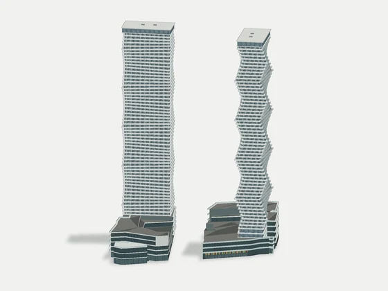
-
Five neighbourhoods in new pictures
New image releases covered East Credit and Creditview, Meadowvale Village, Lorne Park, Churchill Meadows and Lisgar.
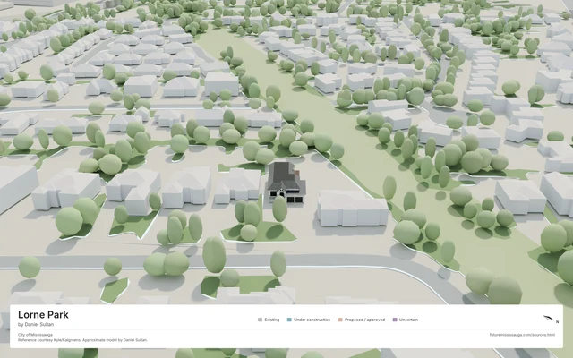
-
Easier browsing on small screens
Controls and spacing across the map and gallery were updated for smaller screens.
-
Revising the front of 41 Bay Street
I centred the upper windows and removed a short section of veranda railing.

-
A closer look at the windows on Bay Street
Designer feedback pinpointed the upper windows in the 41 Bay Street study.
-
Downtown in three stages
See the existing skyline, buildings under construction and a possible future from the same viewpoint.

-
A new gallery for city views
Citywide pictures and neighbourhood renders came together in one gallery.
-
A closer look at M City
New views show the shapes, glazing and façades of the M City towers in Downtown.
October 2026
-
Checking plans for M City’s final phases
I asked the City what records it held for M6, M7 and M8 after the land sale.
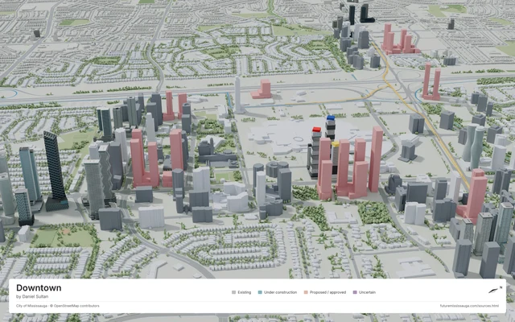
-
Fairview, Superior and Maritz Drive
Fairview gained more surrounding homes. Two industrial buildings gained closer exterior studies.
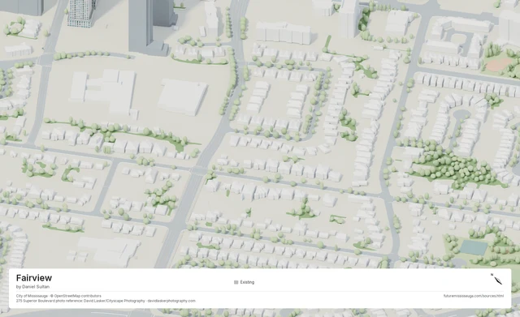
-
Oro joins the Downtown model
The tower study could now be viewed in its surrounding city blocks.

-
Opening a building in its surroundings
Detailed studies became easier to reach directly in the city map.
-
Edge and Avia, tower by tower
The individual towers gained their own detailed previews.

-
East Credit and Creditview on the map
A detailed neighbourhood scene brought more of the area into the interactive map.
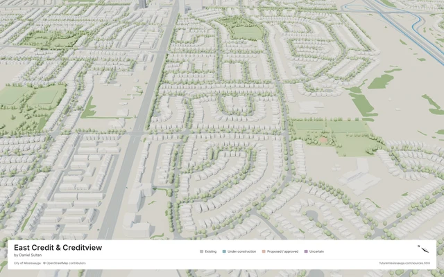
-
Meadowvale Village in detail
A new neighbourhood view arrived alongside house and podium corrections elsewhere in the city.
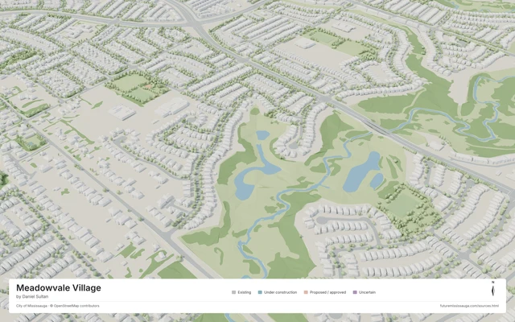
-
A closer view of Lisgar and Argentia
The model gained a detailed view of the neighbourhood and clearer shading on buildings.
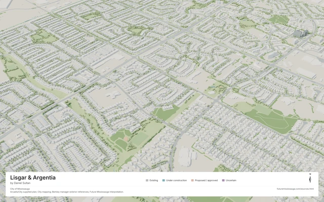
-
Checking the Port Credit bridge record
I added the City’s procurement record to the bridge study and corrected the tender note.
-
Following your place on the homepage
The homepage began highlighting its sections as readers scrolled.
-
A second angle on Boundless Flight
The artist’s photograph helped me see the mural around a corner that the first views missed.
-
Sherobee Road and Churchill Meadows
Shared exterior references improved the Sherobee study. Churchill Meadows gained a wider scene.
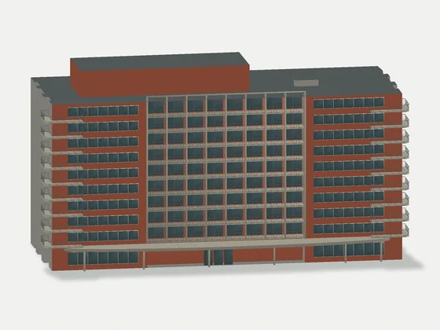
-
Checking the South Common exterior
The timber supplier reviewed my exterior study of the community centre and library.
-
Reading the shelter drawings at Fairwinds Park
New references showed how the shade structure’s roof meets its four posts.
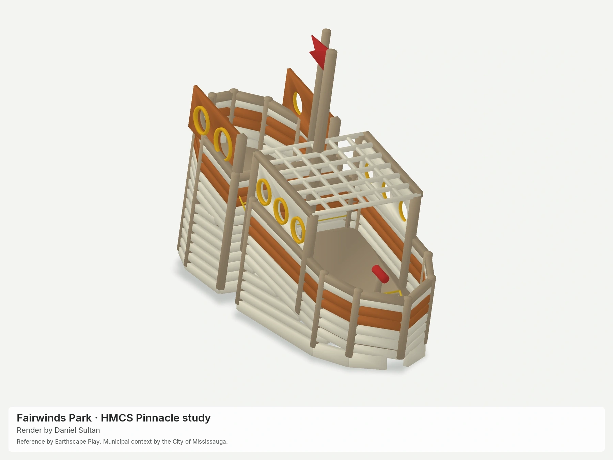
-
Filling a gap on the Clarkson waterfront
The land and buildings around Harding Estate now read together in the Clarkson view.
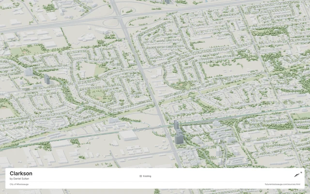
-
A clearer way into the 3D map
The map and site navigation gained clearer labels, and the header stayed visible while scrolling.
-
What the latest plans actually showed
I checked the planning records behind projects in Erin Mills, Lakeview, Port Credit and other neighbourhoods.
-
Turning Aldo Drive towards its driveway
I corrected the house’s orientation and checked new planning evidence around the city.
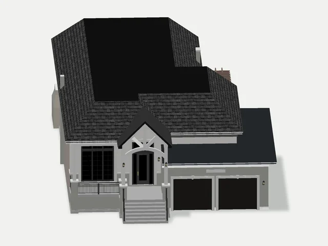
-
Correcting the roof at 1422 Aldo Drive
A contributor spotted a roof shape that needed to change in the exterior study.
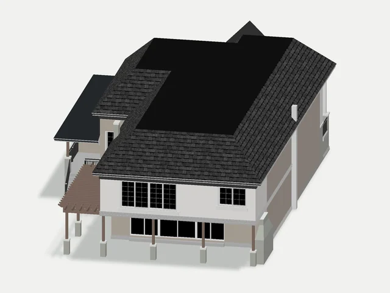
-
First exterior studies for Bay, Peter and John
I sent the three house studies back to the designer for a closer look.

-
References for three Port Credit homes
Merner Row Design responded to my request for exterior references.
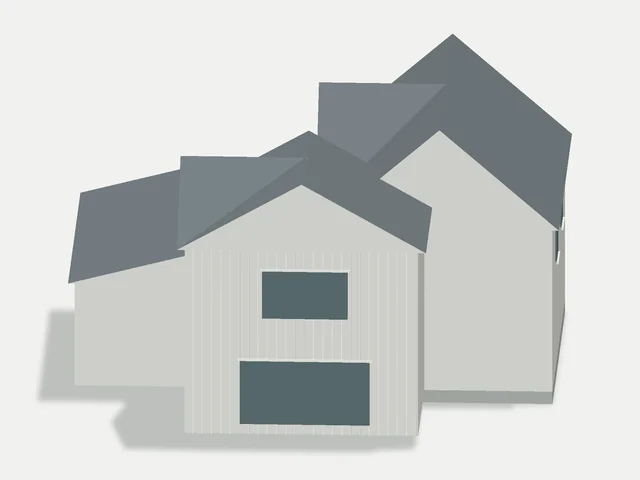
-
Checking a historical design before placing it
A source model and the building visible on the site told different stories.
-
Updating projects that had changed direction
Project-team and municipal records helped me retire two outdated proposals.
-
Two missing Block Nine towers
A gap in the Downtown model led me back to the City’s building footprints and residential directory.
-
Sharing the Streetsville view
I sent the skyline panorama and a short film to a local councillor’s office.
September 2026
-
905HUB features Future Mississauga
905HUB shared the project with local readers.
-
Cooksville and Clarkson from the design models
Source models brought the proposed towers and podiums at both GO stations into clearer focus.
-
Keeping the Lakeview pier visible
A waterfront update preserved the pier while I compared two possible City Centre transit corridors.
-
Alba joins Cooksville
The completed Alba tower appeared in the existing city. Harbourwalk and Voya also received more detailed shapes.

-
A second look at the skyline
Community feedback led to corrections at Absolute World and Exchange, and a new set of portrait views.
-
A recognisable preview when you share the site
Shared links began showing the project’s name in their previews.
-
Bridges that meet their roads
I corrected bridge elevations and gave the city viewer separate controls for moving and rotating.
-
Checking the city model against its sources
The first documented review compared the city model with municipal records and development plans.